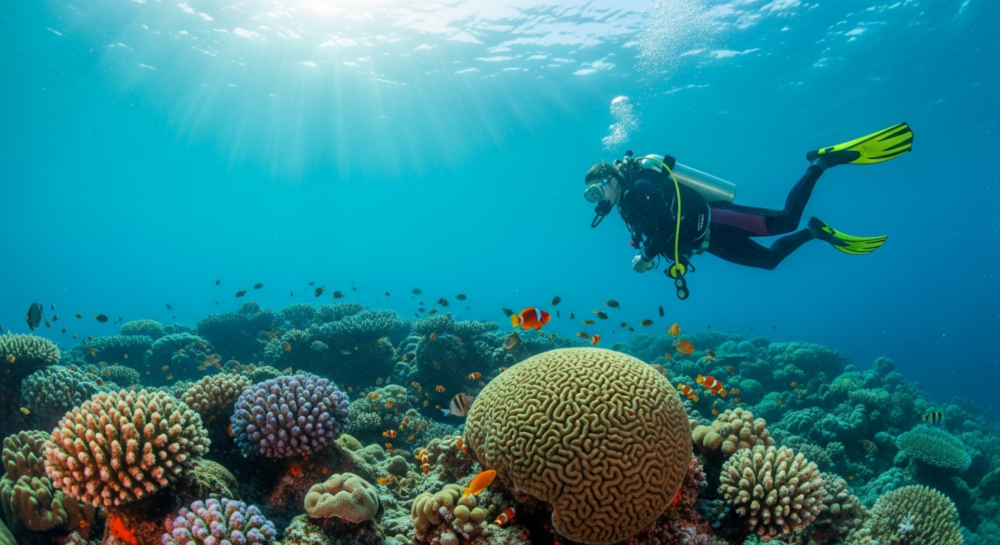

On the water
Chartered fishing tours
Visitors can book chartered fishing tours as part of Taniti’s coastal and harbor-based recreation options.
Visitors can book chartered fishing tours as part of Taniti’s coastal and harbor-based recreation options.

Water-based activities are a major draw, especially for visitors who want to enjoy the island’s beaches and marine scenery.

The island’s tropical rainforest supports adventures such as zip-lining and scenic hiking experiences.

Many tourists spend time in Taniti City, which features native architecture and nearby sandy beaches around Yellow Leaf Bay.
Other popular activities include boat or bus tours of the island, hikes in the rainforest, and visits to Taniti’s active volcano. Many attractions are located in Merriton Landing on the north side of Yellow Leaf Bay.
See air, cruise, bus, taxi, car rental, bike, and walkability details next.